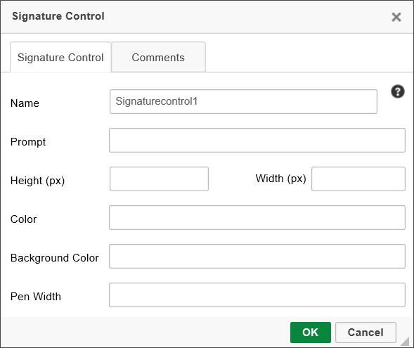
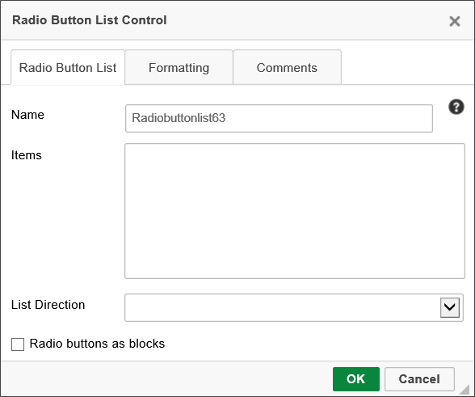

The documentation for the Input, Checkbox, DatePicker, Dropdown, RadioButton, and Switch controls can be found in the Basic Controls topic. The following additional controls are available from the Input Controls menu dropdown in the online Form Designer.

Signature Comments are fields that prompt the end user to enter a comment before he can complete the Form. Signature Comments are not necessarily required for completion, even when the control is added.

Text: The default text to display in the comments box.
Rows: Sets the height of the control.
Columns: Sets the width of the control.
Style: CSS Style commands to apply to the control.
Allow Initiator Comments: When checked the control will accept signature comments from the initiator/submitter.
 In order to enable the initiator to enter comments, you must set the visibility properties for the control to display to the initiator by applying the visibility condition, "New Form Instance = True". By default, this control is hidden in new form instances.
In order to enable the initiator to enter comments, you must set the visibility properties for the control to display to the initiator by applying the visibility condition, "New Form Instance = True". By default, this control is hidden in new form instances.
The signature control allows the user to draw his signature on a Form using a mouse or stylus. In the signature properties, you can configure the name of the control, the prompt for the control, the color of the signature, the color of the background, and the width of the electronic pen.

The ESIGN Act of 2000 guarantees that a signature stored via this control is legally binding: according to the act, “a contract … cannot be denied legal effect, validity, or enforceability solely because an electronic signature or electronic record was used in its formation.” (ESIGN Act Section 106(2))

The Prompt property enables you to configure a prompt message displayed to the user prior to signing.
The Height and Width properties enable you change the size of the Signature control by specifying the size in pixels. The Signature control does, however, have a minimum size of 350x100 pixels, and it cannot be sized smaller than the minimum size.
The Color property sets the color of the pen graphic, while the Background Color property sets that background color of the signature area.
Finally, the Pen Width property sets the thickness, in points, of the pen graphic's lines when drawing the signature with a mouse.
In the Form Definition's Form Control's Tab, this control has Min and Max properties that you can use to specify the minimum and/or maximum size of the signature, measured in points, that are required to validate the signature field.
Process Director will disable the signature control after any save (including OK and save and close). To change the default behavior, you can add a simple entry to the "Set Form Data" tab for the form, that sets the signature control value to an empty string, with the condition that the control is empty on the display.
A comment log is a Form control where users of the Form can add text of any sort, which will be displayed to all subsequent users of the Form. Comment logs every user comment and the time the comment was entered.
In this control’s properties, you can configure the Comment Log’s group name, the control name, the default text, and the width of the log.

Selecting this menu item inserts a form control that will display a multi-line list input control where the cursor is located. The form control looks as follows:

The ListBox control contains a list of checkboxes in a scrollable frame, where multiple checkboxes may or may not be selected. You can configure the name of the control, as well as its content, height, width, and formatting in its properties window. The height and width must beset using CSS syntax (e.g. 20px, 10%, 3em, etc.)

The contents of a ListBox can also be set using a dropdown object.
The Radio Button List control returns a single value from a list of radio buttons.

The Items property enables you to add items to the RadioButtonList by placing one item in each line in the Items input box. Items can also be added to a Radio List from a Dropdown Object.
The List Direction property enables you to select whether you wish the radio buttons to be arrayed horizontally across the page, or vertically in a single column.
The Slider control allows you to select a numerical value using a slider.

In the slider’s property window, you can configure its size, minimum and maximum values, and whether or not the handles and tick marks are displayed. The SmallChange property determines how much the value of the slider changes when the adjacent arrows are clicked, and the LargeChange property determines how much the value of the slider changes when a position on the slider is clicked.

Remember that if you change the Width of the slider, using as percentage width, e.g., "100%" will cause the slider to size itself to the width of it's containing object, such as a table cell. If the Slider is placed in a narrow table cell, then the slider may be much smaller than you expect. Using a pixel width, on the other hand, will set the Slider's width to a fixed width. If you do not set the Width, the Slider will appear with its default width, in pixels. So, it's probably best not to set the Width, unless you need the Slider to appear with a specific size, and then use a width in pixels, e.g., "250px" for the Width setting.
The Show Ticks property cannot be used for Slider controls that use Slider Items.
The Rating control allows the user to set a rating out of a possible number of stars.

The properties window for the Rating control allows you to configure the name of the rating control, the maximum number of stars, and whether the user can select half stars or not.

The User Picker enables the Form user to select Process Director users.

The User Picker’s options allow you to configure filter data as well as display data. The pickers can be displayed in the Form as dropdowns, pop-ups, etc.
You can specify that only users in certain groups show up in the user picker by specifying a comma-separated list of groups in the “Only users in groups” field. If you type “AND” into the “Groups AND / OR” field, then only users belonging to all the specified groups will appear as options in the user picker controller. If you type “OR”, then users belonging to any of the specified groups will appear as options in the user picker control.
The “dropdown prompt” is the text that is shown before an option has been selected in the dropdown. Common values might be “<Select User>” or “<Select Group>”
The user picker will not list users who are members of groups specified in the “Ignore users in group” field, and the user picker will only list users returned by the Business Rule specified in the “Only users in rule” field (if that field is set).
User picker controls display the names of users, but the actual value stored in the User Picker is the UID of the user, which is the GUID value that is used as the primary identifier for the user in Process Director. When setting the value of the user picker via a Set Form Data action, you should use the UID or the UserID as the value to set this type of field.
For users of Process Director v5.31 and higher, you can set the field's default value by using the UserID.
The Group Picker enables the Form user to select Process Director Groups.

The pickers can be displayed in the Form as dropdowns, pop-ups, etc.
The “dropdown prompt” is the text that is shown before an option has been selected in the dropdown. Common values might be “<Select User>” or “<Select Group>”
You can configure the Picker to allow the user to select multiple groups by clicking the check box that is labeled to enable this.